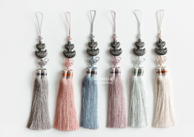
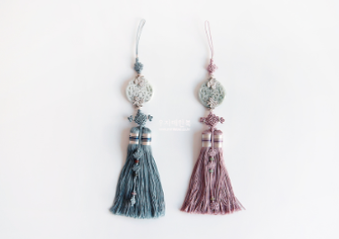
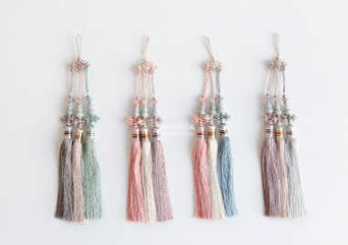
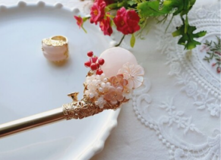
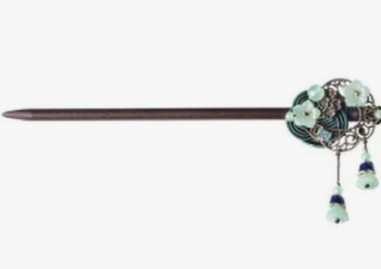
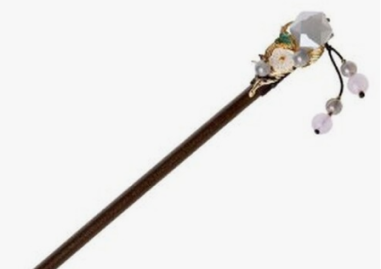
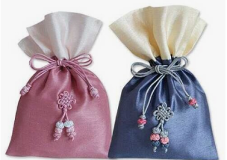
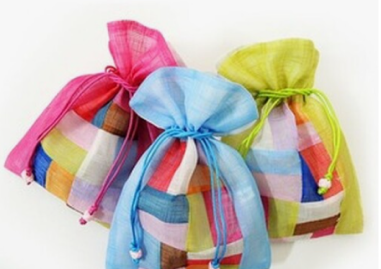
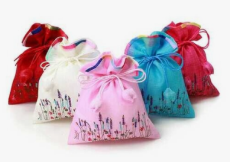

Norigae



Korean traditional ornaments worn by women. The norigae functions as a decorative pendant
and is
both a
good-luck charm hoped to bring something such as eternal youth, wealth or
many sons (depending on
its shape),
as well as a fashion accessory.
Binyeo



Korean traditional ornamental hairpin.Its main purpose is to pin the chignon in place, but it also
serves
as ornamentation, and it has different usages or names according to its material or
shape.
Therefore, it is possible to identify one's social status by looking at their binyeo.
Bokjumeoni



Traditional Korean Lucky Bag. It is believed that when you receive money for a special day or
holiday
and put it in this lucky bag, chance and happiness would probably come.